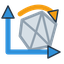

Compare o CAD com o scan. Exporte .f3d para editar e .3mf para impressão.
Onde fica
No ambiente de design do Fusion, abra SOLID, SURFACE ou MESH. Procure o painel IGOR SURFACE.
Os quatro comandos de scan ficam no menu Scan. O IgorSave também aparece na barra de acesso rápido do topo, junto ao salvar do Fusion.
Não encontrou? Confira se o add-in IgorSurface está em execução na janela de suplementos do Fusion.
Escolha o comando
Na ordem do painel. Clique no nome para ir direto às instruções.
Importar Scan
Menu Scan
Quando usar: para trazer um arquivo PLY, STL, OBJ ou 3MF ao projeto.
Passo a passo
Abra um projeto de design no Fusion.
Em Scan → Importar Scan, abra a seleção de arquivo.
Escolha o arquivo e confirme em Abrir.
Confira o tamanho: a importação usa milímetros.
Dica: PLY pode ser texto ou binário, mas precisa conter faces.
Se der erradoSe o PLY tiver só pontos, gere uma malha no software do scanner ou no MeshLab com Poisson, que cria faces a partir dos pontos. Depois importe novamente.
Preparar Scan
Menu Scan
Quando usar: para limpar defeitos, retirar pedaços soltos e deixar a malha mais leve.
Passo a passo
Selecione a Malha que quer preparar.
Confira Reparar (costurar e remover defeitos).
Use Apagar pedaços soltos (fica o maior) somente se os fragmentos menores forem descarte.
Marque Fechar furos se quiser tapar aberturas. Vem desligado.
Para simplificar, deixe Reduzir triângulos ligado e ajuste Manter (%). O padrão mantém 50%.
Clique em Preparar e leia o resumo de etapas concluídas e falhas.
Dica: menos triângulos deixam as próximas etapas mais rápidas. Confira se pequenos detalhes continuaram visíveis.
Trabalhe com apenas a malha desejada visível nesse componente: as etapas procuram a maior malha visível.
Se der erradoUma etapa pode falhar e as outras continuar. Leia “Não rolou” no resumo. Desmarque a etapa problemática e tente novamente; use Desfazer se a limpeza remover algo útil.

Alinhar Scan
Menu Scan
Quando usar: para colocar a peça no chão XY e centralizá-la na origem.
Passo a passo
Ative Fundo (chão).
Clique na região plana que deve ficar embaixo da peça.
Se quiser controlar a direção, ative Eixo X (opcional) e clique numa lateral plana ou num furo/cilindro da mesma peça.
Clique em Alinhar e confira a orientação.
Dica: sem eixo X escolhido, o comando usa a direção mais comprida da peça.
Se der erradoSe a posição ficar estranha, desfaça e clique numa área plana maior e mais limpa para definir o fundo.
Plano de Simetria
Menu Scan
Quando usar: quando os dois lados da peça parecem um espelho e você quer reconstruir só metade.
Passo a passo
Selecione a Malha.
Clique em Achar e aguarde. Malhas grandes levam alguns segundos.
Confira o plano de construção Simetria e o erro médio informado.
Reconstrua uma metade e use o espelhamento do Fusion quando estiver pronta.
Dica: o comando cria o plano de referência. O espelhamento da geometria é uma etapa sua.
Se der errado“Simetria aproximada” pede conferência visual. Limpe pedaços soltos e repita; a peça pode não ser simétrica.
Malha Manual
Desenhe as faces sobre o scan
Quando usar: para decidir onde passam os cantos e as bordas da reconstrução.
Passo a passo
Abra o comando e passe o mouse sobre a malha. Um ponto fantasma mostra onde o próximo clique vai cair.
Clique em 4 cantos em volta da face, em sentido horário ou anti-horário. Evite cruzar as bordas.
A cada 4 pontos, fecha uma face plana. Os pontos criados aparecem brancos; o ponto sob o mouse ou arrastado fica azul.
Com Continuar da última face ligado, a próxima face começa na última aresta. Clique só 2 pontos novos.
Clique perto de um ponto existente para reutilizá-lo. Arraste um ponto para movê-lo sobre a malha; as faces ligadas a ele acompanham.
Use Desfazer último ponto para corrigir um clique. Confirme em OK para concluir as faces.
Snap Malha Gruda nos vértices e nas arestas das faces criadas, inclusive de execuções anteriores.
Snap Peça Gruda nos cantos e nas quinas do STL. Em scan ruidoso, experimente desligar.
Dica: snap = atração do ponto para um canto ou uma borda. Fantasma azul = vai grudar.
Raio do snap (px): de 4 a 40 pixels; começa em 12. Aumente para facilitar o encaixe, diminua para evitar atração indesejada.
A malha fica semitransparente durante o trabalho e volta à opacidade anterior ao fechar o comando.
O resultado fica no componente IgorSurface, dentro do componente da malha: esboços Perímetros N e corpos Face N.
Se der errado“Face não fechou” costuma indicar cantos repetidos ou cruzados. Arraste o canto ou desfaça o último ponto. Para costurar sem frestas, reutilize os cantos das faces vizinhas.
Freeform
Das faces manuais para uma forma suave
Quando usar: para suavizar as faces da Malha Manual e obter um corpo editável no Form.
Passo a passo
Crie as faces com Malha Manual.
Abra Freeform e selecione o Grupo IgorSurface no navegador ou clique numa face dele.
Confira Esconder as faces originais. Ligado, oculta as faces depois da conversão.
Confirme em OK. O comando reúne todas as faces “Face N” desse grupo.
Para continuar modelando, edite a forma criada no Fusion.
Dica: T-Spline é uma superfície suave controlada por uma rede de pontos, como uma armação. A suavização pode afastar a forma do scan; confira com Mapa de Desvio.
Se houver só um grupo IgorSurface, ele já vem selecionado.
Se der erradoSe não houver faces, escolha o grupo da Malha Manual. Se o Fusion recusar a malha, confira faces cruzadas e conexões entre cantos. As faces originais continuam no projeto.
CriarAuto Superfície
Forma suave e aproximada, sem licença paga
Quando usar: para reconstruir formas orgânicas, com curvas suaves, sem marcar cada face.
Passo a passo
Selecione a Malha.
Em Detalhe, escolha Baixo, Médio ou Alto. Comece com Baixo para avaliar a forma.
Confira Iterações de ajuste. O padrão é 4: são as rodadas que aproximam a forma do scan.
Marque Esconder malha se quiser ocultar a referência após a criação.
Confirme a criação e aguarde. Uma peça com cerca de 3 mil triângulos leva aproximadamente 30 segundos; o tempo varia com a peça e os ajustes.
Confira a forma gerada com Mapa de Desvio antes de usar o resultado.
Dica: não precisa de licença paga. O processo próprio cria uma rede automática de pontos de controle, ajusta essa rede à malha e gera uma forma Form/T-Spline → sólido. T-Spline é uma superfície suave controlada por essa rede.
O resultado é suave e aproximado. O RMS, medida do afastamento em relação ao scan, fica em torno de 0,5 mm como referência, sem garantia para toda peça. Cantos vivos e presilhas podem ficar arredondados.
Se der erradoSe falhar, repare ou reduza a malha em Preparar Scan e tente com Detalhe Baixo. Se cantos ou presilhas perderem a forma, reconstrua essas regiões com Ajustar Superfície ou Malha Manual.
Costurar em Sólido
Una as superfícies e feche o volume
Quando usar: quando as superfícies já se encostam e formam a casca completa da peça.
Passo a passo
Abra o comando e confira a lista Superfícies. As faces visíveis do componente IgorSurface já vêm selecionadas.
Adicione as superfícies que faltam ou retire as que não fazem parte da casca.
Confira a Tolerância. O padrão é 0,1 mm: a distância aceita para unir as bordas.
Confirme em OK.
Confira o resultado: um volume fechado recebe o nome Sólido IgorSurface.
Dica: junte superfícies do mesmo componente. Nas faces manuais, reutilizar pontos ajuda a compartilhar as bordas.
Se der errado“Costurou, mas ainda ficou aberto” significa que ainda há uma abertura. Use Extend/Trim (estender/aparar superfícies) no Fusion, feche as frestas e repita. Aumentar a tolerância não substitui uma face faltando.
Ajustar Superfície
Reconstrua uma região por vez
Quando usar: em áreas que parecem plano, cilindro, esfera ou cone.
Passo a passo
Em Pontos na malha, clique na região desejada. Outros cliques na mesma região ajudam a indicar a área.
Em Tipo, deixe Automático ou escolha Plano, Cilindro, Esfera ou Cone.
Em Criar, escolha Superfície para reconstruir a peça. Use Só construção (plano/eixo) para uma referência.
Confira a Tolerância. O valor inicial é 0,05 mm.
Observe a região laranja e os valores de Ajuste. Confirme em OK e repita nas outras regiões.
Dica: RMS resume o erro do ajuste; “máx” mostra o maior afastamento. Os dois aparecem em milímetros.
Use Limpar pontos para recomeçar a seleção. A superfície gerada usa nomes como MS_Plano_1.
Se der erradoSe não ajustar ou pegar a forma errada, limpe os pontos, clique em outra área e escolha o Tipo manualmente. Uma região irregular pode exigir Malha Manual.
Plano → Esboço
Tire um contorno da peça
Quando usar: para obter um esboço de corte e depois extrudar ou reconstruir perfis no Fusion.
Passo a passo
Em Ponto na malha, clique numa área plana.
Ajuste Corte para dentro. Começa em 0,2 mm, entrando no material.
Para vários perfis, aumente Cortes em série e defina Passo entre cortes. O passo inicial é 5 mm.
Deixe Linhas e arcos limpos ligado para simplificar o contorno. Confira Tolerância do contorno, inicialmente 0,05 mm.
Confirme em OK. Procure os esboços Corte N e confira o perfil antes de extrudar.
Dica: cada corte em série entra mais fundo no material. A extrusão é feita depois por você.
Se der errado“Essa área não é plana” pede outra região. “O plano não cortou a malha” pede aumentar Corte para dentro.
Mapa de Desvio
Compare o scan com o CAD
Quando usar: para ver onde a reconstrução se afasta da malha original.
Passo a passo
Em Malha, selecione o scan original.
Em Superfícies/sólidos, selecione o CAD reconstruído.
Defina Tolerância (verde), inicialmente 0,1 mm: o afastamento aceitável para sua peça.
Defina Escala (vermelho/azul), inicialmente 1 mm: a faixa de cor fora da tolerância.
Clique em Calcular. Leia a porcentagem dentro da tolerância, o RMS e os máximos.
Para remover as cores, abra novamente, marque Só limpar o mapa e clique em Calcular.
Verde: dentro da tolerânciaAmarelo/vermelho: scan para foraCiano/azul: scan para dentro
Dica: RMS resume o afastamento; os máximos mostram os extremos encontrados. Malhas grandes usam amostragem de até 60 mil vértices: os valores podem não capturar todo detalhe.
O mapa continua visível após o cálculo e esconde a malha original enquanto aparece.
Se der erradoSe não medir, confira se escolheu uma malha e pelo menos um corpo CAD com geometria. Se as cores parecerem estranhas, confira se os dois estão alinhados e se selecionou todo o CAD relevante.
IgorOrganizer
Organize o navegador do projeto
Quando usar: quando sólidos, superfícies ou malhas soltos deixam o projeto difícil de navegar.
Passo a passo
Abra o projeto de design que quer organizar.
Clique em IgorOrganizer. Ele executa direto, sem opções.
Leia quantos corpos foram separados e confira os componentes no navegador.
Dica: cada corpo solto vira um componente com seu nome. Os esboços ficam onde estavam; o grupo IgorSurface permanece junto. Componentes vinculados são ignorados.
Um componente que já tem um único corpo é mantido. Use Desfazer para reverter a organização.
Se der erradoA mensagem lista os corpos que não puderam ser movidos. Confira esses itens no navegador. “Já estava organizado” significa que não havia corpos a separar.
IgorSave
Exporte o projeto para uma pasta
Quando usar: para guardar o design ativo em .3mf e .f3d.
Passo a passo
Abra IgorSave no painel ou na barra de acesso rápido do topo.
Clique em Escolher pasta… e confira o destino em Pasta.
Deixe Fechar Fusion depois de salvar desmarcado para continuar trabalhando.
Se quiser repetir a exportação ao fechar projetos, marque Automático: salvar ao fechar o projeto.
Clique em Salvar. A pasta e as opções ficam guardadas para as próximas vezes.
Confira na pasta os dois arquivos: <nome>.3mf e <nome>.f3d.
Dica: .3mf leva a geometria para impressão. .f3d é o arquivo do Fusion para continuar editando.
Exportações com o mesmo nome usam os mesmos caminhos. Use outra pasta ou outro nome se quiser manter versões.
Fechar Fusion depois de salvar encerra o aplicativo após exportar. Alterações não salvas na nuvem ficam no .f3d exportado; salve os outros documentos antes de usar essa opção.
Se der erradoConfira se a pasta permite gravar e se o documento é um design. Falhas do modo automático ficam em %APPDATA%\IgorSurface\igorsave.log. Confira sempre se os dois arquivos foram criados.
Se travar no caminho
O que aconteceu
O que fazer
CriarAuto está lento
Na próxima tentativa, use Detalhe Baixo. Reduza a malha em Preparar Scan antes de converter. Cerca de 3 mil triângulos levam aproximadamente 30 segundos; o tempo varia.
CriarAuto arredondou cantos ou presilhas
O resultado é suave e aproximado. Para precisão mecânica, use Ajustar Superfície ou Malha Manual e confira com Mapa de Desvio.
A costura não vira sólido
Procure frestas e faces faltando. Estenda/apare as superfícies no Fusion e costure outra vez.
O ponto não gruda
Aumente Raio do snap (px). Confira Snap Malha e Snap Peça. O fantasma azul indica encaixe.
O ponto pula para o lugar errado
Diminua o raio. Em malha ruidosa, desligue Snap Peça e mantenha Snap Malha para unir suas faces.
A face manual não fecha
Evite cantos repetidos e bordas cruzadas. Use Desfazer último ponto ou arraste o canto.
O esboço veio vazio
Aumente Corte para dentro. O plano precisa atravessar a malha.
O scan sumiu após medir
Execute Mapa de Desvio com Só limpar o mapa. A malha original volta a aparecer.
Um comando mostra erro
Copie a mensagem e consulte %APPDATA%\IgorSurface\erros.log. Cole esse caminho no Explorador de Arquivos.
O salvamento automático falhou
Confira o destino e consulte %APPDATA%\IgorSurface\igorsave.log. Faça uma exportação manual e confira os dois arquivos.